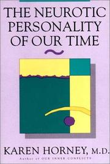

The Neurotic Personality of Our Time
Book·Karen Horney, 1937·我们时代的神经症人格

Horney reinterprets neurosis from cultural and interpersonal perspectives.
- Author
- Karen Horney
- Year
- 1937
- Difficulty
- Intermediate
- Kind
- Primary text
- Schools
- Neo-Freudian School
- Core theories
- Basic Anxiety and Neurotic Trends
Editions
- Chinese edition 《我们时代的神经症人格》 [美] 卡伦·霍妮 · tr. 郭本禹 / 方红 · 中国人民大学出版社 · 2013 Douban 9 (946 ratings) Douban page ↗
- English edition The Neurotic Personality of Our Time Karen Horney · W. W. Norton, first edition · 1937 Open Library ↗